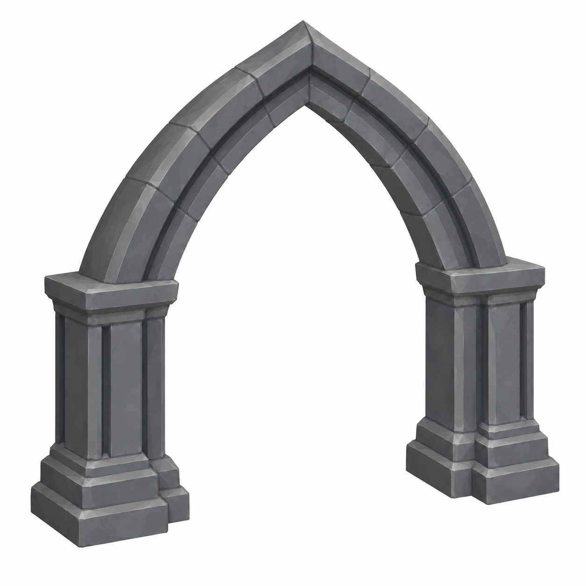

Pending Mustafa approval · Jira feedback10652 · 1 October2026
Clear pointed Gothic profile; no keystone; springers seated on the pier capitals. Target overall6.2 ×5.3 ×1m; opening4.6 ×4.5m; no door leaf. Exact dimensions need mesh validation.

Generation prompt and hash · Other12 parts approved per10652. Minimum resolution removed per10650.